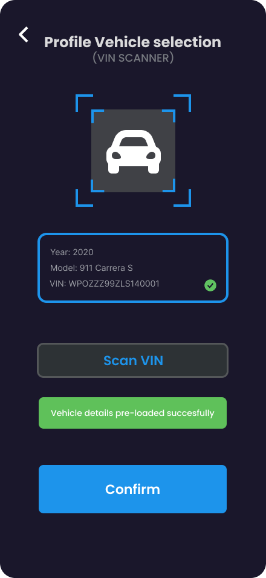
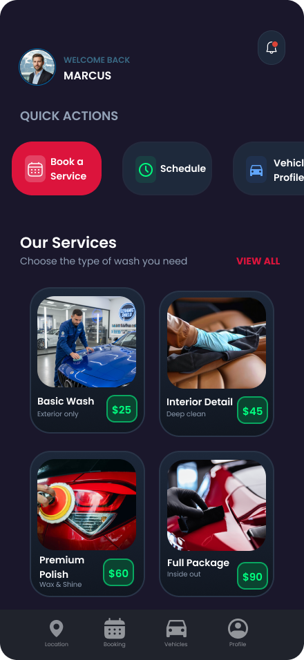
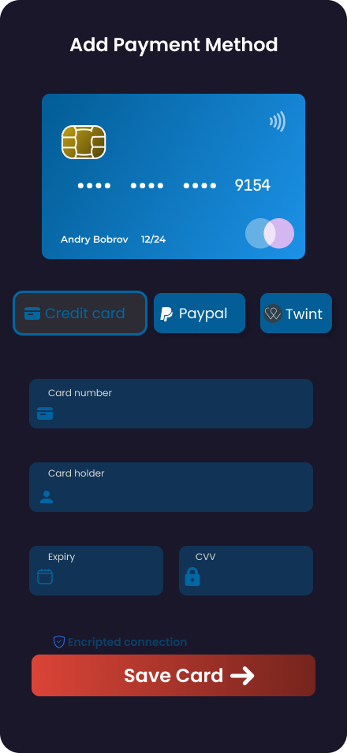

Rediseñé la arquitectura del sistema e integré tecnología VIN-Scan para eliminar la fricción en cada paso del flujo.
Antes de diseñar una sola pantalla hice lo que el proyecto original nunca hizo: analizar. El research reveló que los síntomas visibles — abandono, demora, frustración — eran consecuencia de tres vacíos estructurales que nadie había nombrado.
Con los tres diagnósticos definidos, el proceso de rediseño tuvo una lógica clara: atacar cada problema en orden de profundidad — primero la estrategia, después la estructura, al final la interfaz.
Rediseñé toda la arquitectura del sistema. VIN-Scan elimina el ingreso manual, Vehicle Profile guarda el historial y Quick Actions llevan al usuario directamente a lo que necesita.



Si tu flujo tiene fricciones, lo encuentro. Si tu arquitectura no escala, la rediseño. Entrego soluciones de UX listas para desarrollar.
Hablemos© 2026 WZ Design Studio · Bahía Blanca, Argentina